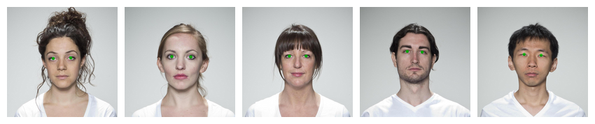
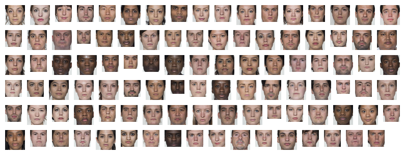
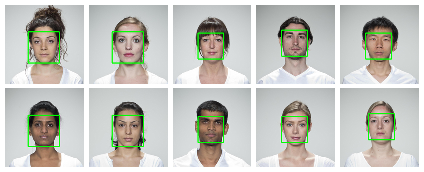
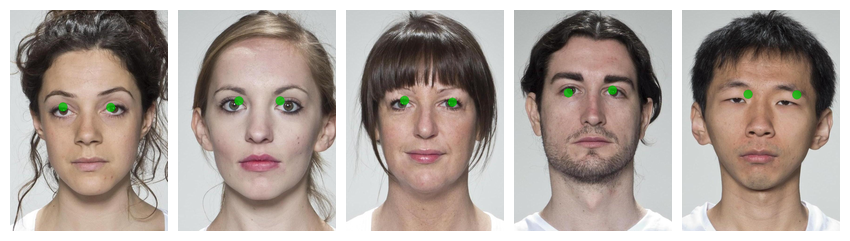
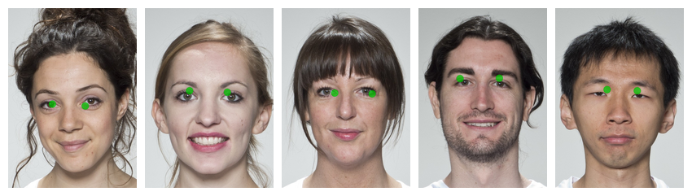
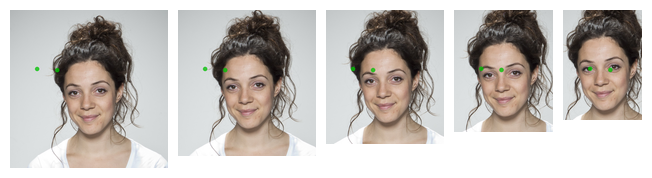
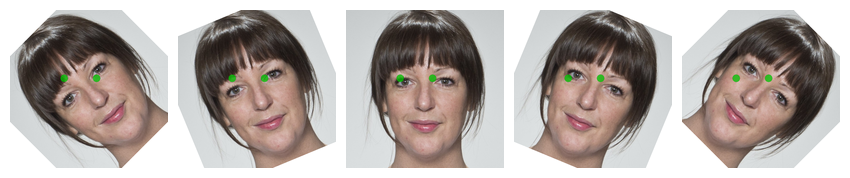
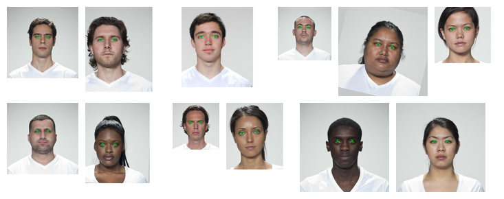
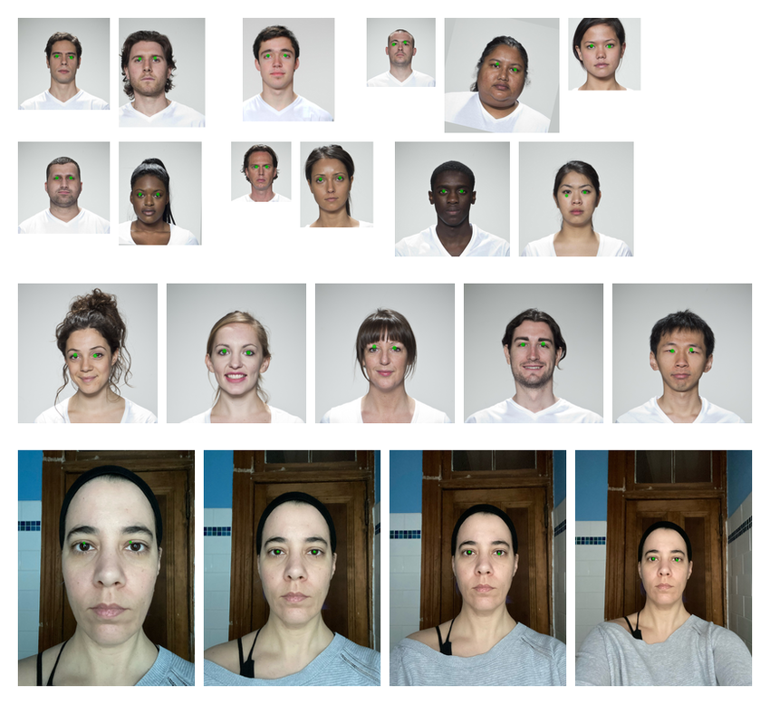
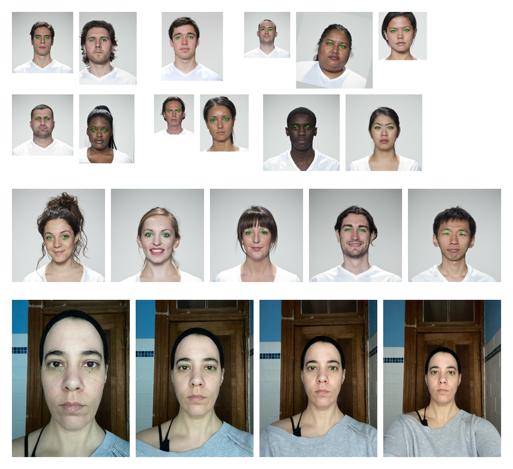

facetrain
facetrain.Rmd
library(webmorphR)
library(webmorphR.dlib)
wm_opts(plot.maxwidth = 850)
library(tictoc) # for timing thingsBasic setup
Load images
First, load your faces and templates. The London demo set are really big images (1350x1350 pixels) so I’m going to resize them to make some of the later functions run faster.
Select template points
Next, select the template points you want to make a model for. Here, we’re going to train a very simple model of just the centres of the eyes.
stim_2pt <- subset_tem(stim, 0, 1)
# plot to check
stim_2pt[1:5] |>
draw_tem(pt.size = 20) |>
plot()
XML file
Use tem_to_xml() to save the images to a directory,
write the template points to an xml file, and run a python script that
finds the “bounding box” of each face. This function returns the
location of the xml file, which you’ll need for the next step.
xml <- tem_to_xml(stim_2pt, dir = "images")You can visualise the bounding boxes to check if anything went wrong.
get_bounds(xml, crop = TRUE) |> plot(nrow = 6)
If you have a lot of images, you can subset them by index to just look at a sample. Set crop to FALSE and draw the template to view the bounding box in the full image context.
get_bounds(xml, crop = FALSE, subset = 1:10) |>
draw_tem(line.color = "green",
line.size = 10,
line.alpha = 1) |>
plot(nrow = 2)
Facetrain
Now run facetrain() using the XML file. This will create
a shape predictor output file that you can use in auto-delineation.
facetrain(xml, "eyes.dat")Test
Test your shape predictor file on a few images
eyes <- "eyes.dat"
stim_eyes <- stim |>
subset(1:5) |>
crop(.5, .7) |>
auto_delin(replace = TRUE,
model_path = "eyes.dat")
# plot to check
stim_eyes[1:5] |>
draw_tem(pt.size = 20) |>
plot()
Not perfect, but we didn’t have very many images and only used the default settings. It probably will be worse on out-of-set images:
smiling <- demo_stim("smiling", 1:5) |>
resize(0.5)
smiling_eyes <- smiling |>
crop(0.5, 0.7) |>
auto_delin(replace = TRUE,
model_path = eyes)
# plot to check
smiling_eyes |>
draw_tem(pt.size = 20) |>
plot()
What if we change the size of the image, keeping the faces in the center? Apply different croppings to the first image.
smiling |>
subset(1) |>
rep(5) |>
crop(width = seq(1, .5, length.out = 5),
height = seq(1, .7, length.out = 5)) |>
auto_delin(replace = TRUE,
model_path = eyes) |>
draw_tem(pt.size = 20) |>
plot()
That’s pretty bad. What if we change the face location in the image?
smiling |>
subset(2) |>
rep(5) |>
crop(1, 1,
x_off = seq(0, .2, .05),
y_off = seq(0, .2, .05)) |>
auto_delin(replace = TRUE,
model_path = eyes) |>
draw_tem(pt.size = 20) |>
plot()Can it handle rotation?
smiling |>
subset(3) |>
rep(5) |>
crop(.6, .6) |>
rotate(degrees = seq(-45, 45, length.out = 5)) |>
auto_delin(replace = TRUE,
model_path = eyes) |>
draw_tem(pt.size = 20) |>
plot()
Train on more images
Clearly, there’s something lacking in our training. Maybe we don’t have enough images, or they’re not diverse enough (the London set was laboriously manually standardised).
Make more images by permuting the original images. At each step, add the previous stimulus lists together to make a larger permuted set. Start with rotation, since that takes the longest.
rotations <- stim_2pt |>
rotate(seq(-20, 20, 1), patch = TRUE)
crops <- c(stim_2pt, rotations) |>
crop(seq(.5, 1, .05), seq(.5, 1, .05))
sizes <- c(stim_2pt, rotations, crops) |>
resize(seq(.5, .9, .1))
offsets <- expand.grid(
x = seq(0, 0.25, 0.05),
y = seq(0, 0.15, 0.05)
)
locations <- c(stim_2pt, rotations, crops, sizes) |>
crop(1, 1,
x_off = offsets$x,
y_off = offsets$y)Combine all of the image sets and give each a unique name.
Check a random subsample to make sure the template points changed size, location and rotation with the images.
set.seed(90210)
idx <- sample(seq_along(all_stim), 12)
samp <- all_stim[idx]
# plot to check
samp |>
draw_tem(pt.size = 20) |>
plot(nrow = 2)
XML file
This will take quite a while now. It takes my computer about 1 minute to detect 100 face locations for the XML file. Luckily, this only needs to be done once (make sure you comment this code out after you’ve run it so you don’t accidentally run it again). Time for coffee!
all_xml <- tem_to_xml(all_stim, dir = "allimages")Default parameters
Train a model with default parameters. We’ll use tictoc to see how long each training takes.
Test Again
Test your shape predictor file on that same random subset of images. We’ll be testing a fair, bit, so write a function to make it easier. We’ll add some very out-of-set examples to see how well our models generalise.
oos <- demo_stim("zoom")
viz_model <- function(model_path) {
in_set <- samp |>
auto_delin(replace = TRUE,
model_path = model_path) |>
draw_tem(pt.size = 20) |>
plot(nrow = 2)
sm_set <- smiling |>
auto_delin(replace = TRUE,
model_path = model_path) |>
draw_tem(pt.size = 20) |>
plot()
out_set <- oos |>
auto_delin(replace = TRUE,
model_path = model_path) |>
draw_tem(pt.size = 20) |>
plot()
c(in_set, sm_set, out_set) |> plot(nrow = 3)
}
tictoc::tic()
viz_model("eyes-default.dat")
pred_timing <- tictoc::toc()
#> 22.018 sec elapsedNot terrible, but not perfect. Let’s try changing some of the defaults.
Changing Defaults
See ?facetrain for explanations of all the arguments, or
the original source by Adrian Rosebrock at PyImageSearch: Training
a custom dlib shape predictor.
| arg | default | explanation |
|---|---|---|
| tree_depth | 5 | the depth of each regression tree; typically 2:8 |
| nu | 0.5 | regularization parameter; must be 0:1 |
| cascade_depth | 15 | the number of cascades used to train the shape predictor; typically 6:18 |
| feature_pool_size | 400 | number of pixels used to generate features for the random trees at each cascade |
| num_test_splits | 50 | selects best features at each cascade when training |
| oversampling_amount | 5 | controls the number of random deformations per image (i.e., data augmentation) when training the shape predictor; typically 0:50 |
| jitter | 0.1 | amount of oversampling translation jitter to apply; typically 0 to 0.5 |
| num_threads | 0 (all available cores) | number of threads/CPU cores to be used when training |
Set up list of models timings to store the model construction and prediction timings in.
models <- list(
default = "eyes-default.dat",
td = "eyes-td_7.dat",
nu = "eyes-nu_.1.dat",
cd = "eyes-cd_18.dat",
fps = "eyes-fps_600.dat",
nts = "eyes-nts_75.dat",
oa = "eyes-oa_10.dat",
jitter = "eyes-jitter_.2.dat"
)Tree Depth
Let’s try increasing tree_depth from 5 to 7. Larger
values will make the model more accurate, but slower when making
predictions.
tictoc::tic()
viz_model(models$td)
pred_timings$td <- tictoc::toc()
#> 28.036 sec elapsedNu
Decrease nu from 0.5 to to 0.1. Decreasing this number helps models to generalise, but requires a lot of training images.
tictoc::tic()
viz_model(models$nu)
pred_timings$nu <- tictoc::toc()
#> 21.594 sec elapsedCascade Depth
Increase cascade_depth from 15 to 18. This will make the
model more accurate, but the file size will be larger.
tictoc::tic()
viz_model(models$cd)
pred_timings$cd <- tictoc::toc()
#> 22.491 sec elapsedFeature Pool Size
Increase feature_pool_size from 400 to 600. This will
make the model more accurate, but slower at making predictions.
tictoc::tic()
facetrain(all_xml, models$fps,
feature_pool_size = 600)
train_timings$fps <- tictoc::toc()
tictoc::tic()
viz_model(models$fps)
pred_timings$fps <- tictoc::toc()
#> 22.013 sec elapsedNumber of Test Splits
Increase test_splits from 50 to 75. This will make the
model more accurate, but training will take longer.
tictoc::tic()
facetrain(all_xml, models$nts,
num_test_splits = 75)
train_timings$nts <- tictoc::toc()
tictoc::tic()
viz_model(models$nts)
pred_timings$nts <- tictoc::toc()
#> 21.201 sec elapsedOversampling Amount
Increase the number of random deformations from 5 to 10. This can increase generalisation, but will also increase training time.
tictoc::tic()
facetrain(all_xml, models$oa,
oversampling_amount = 10)
train_timings$oa <- tictoc::toc()
tictoc::tic()
viz_model(models$oa)
pred_timings$oa <- tictoc::toc()
#> 23.247 sec elapsedModel size and speed
Model size is in MB. Speed in minutes.
| model | size | train | pred |
|---|---|---|---|
| eyes-default.dat | 8.3 | 1.6 | 0.3 |
| eyes-td_7.dat | 31.5 | 3.4 | 0.5 |
| eyes-nu_.1.dat | 8.5 | 1.7 | 0.4 |
| eyes-cd_18.dat | 9.9 | 2.0 | 0.4 |
| eyes-fps_600.dat | 8.4 | 1.8 | 0.4 |
| eyes-nts_75.dat | 8.2 | 2.0 | 0.4 |
| eyes-oa_10.dat | 8.4 | 3.5 | 0.4 |
| eyes-jitter_.2.dat | 8.3 | 1.6 | 0.4 |